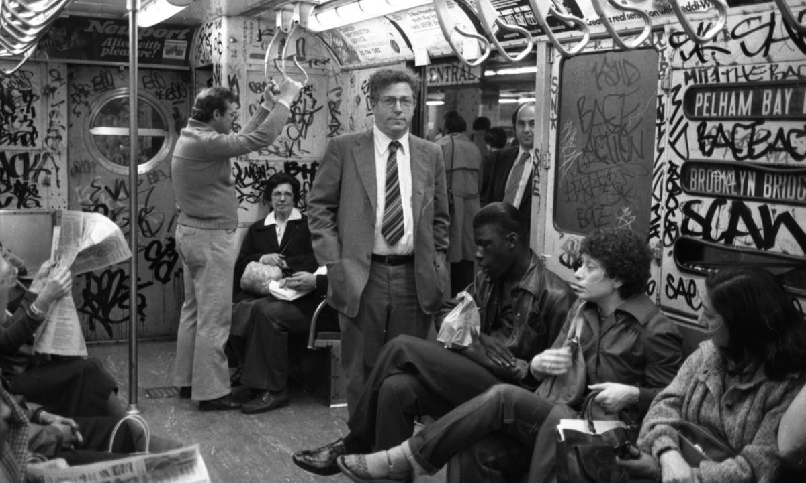

NYC subway car interior, circa 1980. The photo accompanied a story in today’s New York Daily News that if the Metropolitan Transportation Authority doesn’t get substantial federal funding necessitated by pandemic-related income shortfalls, the subway system could return to the “bad old days.” More pics at the link:
MTA officials warn NYC subway could return to bad old days without $16.2B in COVID relief